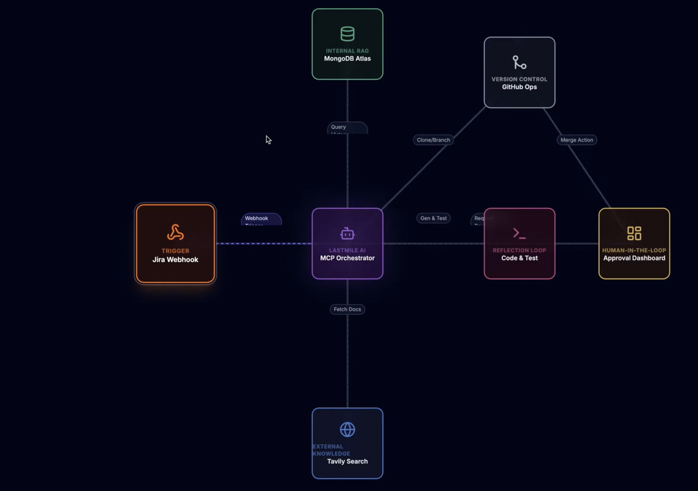

← Back to homepage
H-KFX: Hybrid Knowledge Fixer: Autonomous Bug-Fixing Agent
An AI agent that reads a Jira ticket, finds the buggy code, generates a validated fix, and opens a pull request: in under 90 seconds.
GPT-4o
MCP
MongoDB RAG
Tavily AI
Jira API
GitHub API
Python 86% / TypeScript 13%

90%
Reduction in debugging time
60–90s
Ticket to merged PR
3×
Self-correction retries before escalation
MUG 2025
Hackathon project
What It Does
H-KFX (Hybrid Knowledge Fixer) is a fully autonomous bug-fixing agent. A developer creates a Jira ticket
describing a bug and pointing to the relevant file. H-KFX takes it from there: it analyzes the problem
with GPT-4o, searches a RAG knowledge base of past fixes stored in MongoDB, augments this with
external best practices via Tavily AI, generates a code fix, runs the relevant test suite in isolation to
validate the fix, and: if approved: opens and merges a GitHub pull request. The Jira ticket is then
automatically marked Done.
End-to-End Pipeline
1
Webhook Trigger
A new Jira ticket is created → webhook fires to the Flask backend (exposed via ngrok). Ticket metadata (summary, description, repo URL, branch, file) is parsed.
2
AI Analysis (GPT-4o)
GPT-4o reads the ticket and the relevant source file to understand the root cause and formulate a fix strategy.
3
RAG Search (MongoDB Atlas)
Vector search over a knowledge base of past bug fixes. Similar historical fixes are retrieved and injected as context into the code generation prompt.
4
External Knowledge (Tavily AI)
Tavily searches the web for external best practices, library documentation, and community solutions relevant to the bug type.
5
Code Generation & Validation
GPT-4o generates the fix. The agent derives and runs only the relevant tests in an isolated environment. If validation fails, the agent self-corrects (up to 3 retries).
6
Human Approval & Auto-Merge
A review link is posted on the Jira ticket. The developer inspects the diff in the React frontend and approves. H-KFX creates and merges the GitHub PR, then closes the Jira ticket.
Key Design Decisions
- Smart test selection: Rather than running the full test suite, the agent derives the minimal set of tests relevant to the changed code: fast and targeted.
- Self-correcting loop: If tests fail, the agent feeds the error output back to GPT-4o and tries again (max 3 iterations) before escalating to the developer.
- RAG over past fixes: The MongoDB knowledge base grows with every fix the system makes, making it smarter over time.
- Human-in-the-loop: Approval is always required before merge: the agent assists, it doesn't replace developer judgment.
Tech Stack
- AI: GPT-4o (analysis + code generation), GPT-4o-mini (analysis), Tavily AI (web search)
- RAG: MongoDB Atlas with vector embeddings for past-fix retrieval
- Backend: Python 3.11, Flask, SSE for real-time progress streaming
- Frontend: React (Vite), TypeScript: pipeline visualization + code review UI
- Integrations: Jira Cloud API (webhooks, ticket updates), GitHub REST API (PR creation + merge)
- Networking: ngrok for local webhook exposure during development